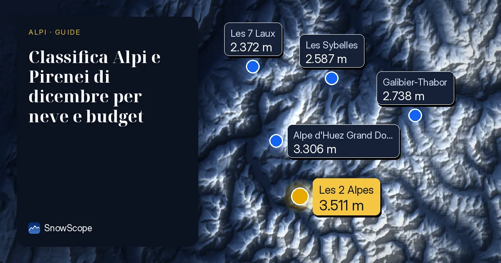

Classifica Alpi e Pirenei di dicembre per neve e budget
Le stazioni di confine francesi e italiane sono in cima alla nostra classifica di valore di dicembre 2026 per i viaggi low-cost. Les 2 Alpes guida con 75 cm a metà montagna in un dicembre abituale e uno skipass di 6 giorni a 266,50 EUR, mentre Livigno fa pagare 258,50 EUR prima del 18 dicembre. Le aree dei Pirenei sono ultime con poca neve e skipass che non sono un affare.
Le previsioni neve in tempo reale per Les 2 Alpes nell'app SnowScopeAltezza neve, allerte powder e mappa 3D, gratis.
Come abbiamo confrontato le dieci aree sciistiche
Abbiamo classificato dieci stazioni in Francia, Svizzera, Italia, Andorra e Spagna usando la nostra storia della neve di 46 inverni passati. Ogni stazione è controllata alla base degli impianti, a metà montagna e in cima, insieme alle sue piste e impianti mappati. I prezzi degli skipass provengono da ogni sito ufficiale per il 2026-27, tranne La Thuile, dove nessun prezzo è stato verificato sul sito ufficiale. I numeri della neve dividono le dieci in tre gruppi chiari.

Leader sicuri per la neve e zone di confine
Les 2 Alpes è in cima alla nostra tabella con un'area sciistica mappata di 108 km di piste e 46 impianti che raggiungono i 3.511 m. La sua base a 1.284 m è sottile, con una media di 16 cm (0 cm minimo, 39 cm massimo) e raggiunge i 30 cm o più nel 2 % degli inverni passati tra l'1 e il 7 dicembre e il 37 % tra il 22 e il 28 dicembre. Soggiorna a metà montagna (2.397 m), che ha una media di 75 cm (30 cm minimo, 140 cm massimo) e raggiunge i 50 cm o più nel 46 % degli inverni passati tra l'1 e il 7 dicembre, il 72 % tra l'8 e il 14 dicembre, l'87 % tra il 15 e il 21 dicembre e il 91 % tra il 22 e il 28 dicembre, mentre la cima a 3.511 m ha una media di 176 cm (72 cm minimo, 302 cm massimo). Gli skipass costano 68,00 EUR per un biglietto flessibile di 1 giorno, 266,50 EUR per 6 giorni, o 42 EUR al giorno il 28-29 novembre 2026; la neve a metà montagna è cresciuta da 63 cm nei primi 15 inverni a 77 cm negli ultimi 15 inverni.
Saas-Fee (48 km di piste mappate, 30 impianti) raggiunge i 3.556 m con 68 cm abituali a metà montagna (2.668 m; 31 cm minimo, 113 cm massimo; in calo da 70 cm a 63 cm), sebbene gli skipass costino CHF 86 per 1 giorno e CHF 419 per 6 giorni. Sulla neve spiccano due località di confine: Montgenèvre (62 km, 24 impianti) e La Thuile (79 km, 17 impianti). Montgenèvre ha una media di 56 cm alla sua base di 1.795 m (22 cm minimo, 102 cm massimo) e raggiunge i 30 cm o più nell'89 % degli inverni passati entro il 15-21 dicembre; la metà montagna è salita da 49 cm nei primi 15 inverni a 76 cm negli ultimi 15 inverni, e uno skipass di 1 giorno costa 45,50 EUR fino al 18 dicembre 2026 (56,00 EUR dal 19 dicembre, o 301,00 EUR per 6 giorni in alta stagione). La Thuile ha una media di 44 cm alla sua base di 1.468 m (17 cm minimo, 92 cm massimo) e 67 cm a metà montagna, salendo da 64 cm a 73 cm.
Buon valore medio per metà dicembre
Valloire-Valmeinier e Vars-Risoul hanno entrambe 131 km di piste mappate a prezzi francesi medi. Valloire-Valmeinier (34 impianti, cima a 2.738 m) costa 54,90 EUR per 1 giorno, 278,50 EUR per 6 giorni, o 20 EUR il 5-6 dicembre 2026 con accesso alla pista di pattinaggio. La sua base a 1.406 m ha una media di 29 cm (12 cm minimo, 58 cm massimo), mentre la metà montagna (2.072 m) ha una media di 66 cm (31 cm minimo, 120 cm massimo; in aumento da 55 cm nei primi 15 inverni a 69 cm negli ultimi 15 inverni) e raggiunge i 50 cm o più nel 43 % degli inverni passati tra l'1 e il 7 dicembre, il 67 % tra l'8 e il 14 dicembre, l'80 % tra il 15 e il 21 dicembre e l'87 % tra il 22 e il 28 dicembre. Vars-Risoul (38 impianti, cima a 2.722 m) fa pagare 58 EUR per 1 giorno e 298 EUR per 6 giorni, con 51 cm abituali a metà montagna (20 cm minimo, 97 cm massimo; in aumento da 42 cm a 62 cm).
In Italia, Livigno (83 km, 37 impianti) ha lo skipass di 6 giorni più basso verificato a 258,50 EUR dal 28 novembre al 18 dicembre 2026 (51,50 EUR al giorno poi, 66,00 EUR dal 19 al 25 dicembre, 74,50 EUR dal 26 dicembre). La sua base a 1.811 m ha una media di 28 cm (6 cm minimo, 60 cm massimo) e la metà montagna (2.301 m) ha una media di 48 cm (in aumento da 39 cm nei primi 15 inverni a 52 cm negli ultimi 15 inverni), quindi resta sulla cima a 2.791 m (85 cm abituali). Pila (56 km, 16 impianti) fa pagare 60,00 EUR per 1 giorno e 322,00 EUR per 6 giorni, con una media di 45 cm a metà montagna (in aumento da 42 cm a 49 cm) e 80 cm a 2.723 m.
Pirenei: poca neve, nessun vero vantaggio di prezzo
Grandvalira (137 km di piste mappate, 53 impianti) e Baqueira Beret (154 km, 36 impianti) hanno grandi aree mappate, eppure la neve di dicembre è sottile e gli skipass non costano meno della maggior parte delle località alpine della lista. La base di 1.674 m di Grandvalira ha una media di 9 cm (0 cm minimo, 28 cm massimo) e raggiunge i 30 cm o più solo nel 7 % degli inverni passati dall'8-14 dicembre in poi. La metà montagna (2.146 m) ha una media di 27 cm (2 cm minimo, 63 cm massimo; in aumento da 21 cm a 25 cm), mentre la cima a 2.619 m ha una media di 45 cm. Il suo skipass di 1 giorno per lunedì 14 dicembre 2026 è 62,50 EUR online o 72,00 EUR alla biglietteria.
Baqueira Beret ha una media di 8 cm alla sua base di 1.504 m (0 cm minimo, 37 cm massimo), 20 cm a metà montagna (2 cm minimo, 56 cm massimo; in aumento da 17 cm a 20 cm) e 30 cm alla sua cima a 2.600 m, raggiungendo i 30 cm o più nel 39 % degli inverni passati tra l'1 e il 7 dicembre e il 59 % tra il 22 e il 28 dicembre. Gli skipass costano 74,00 € per 1 giorno (70,00 € con la carta ricaricabile) o 359,00 € per 6 giorni.
Scegliere la settimana e l'altezza
Per l'inizio di dicembre con un budget limitato, prenota Livigno prima del 18 dicembre a 258,50 EUR per 6 giorni e scia sui suoi impianti superiori, o scegli Montgenèvre a 45,50 EUR al giorno con una solida copertura alla base di 1.795 m. Per il 15-21 dicembre o il 22-28 dicembre, Les 2 Alpes (266,50 EUR per 6 giorni) e Valloire-Valmeinier (278,50 EUR) offrono una neve più profonda a metà montagna a meno di Saas-Fee.
Consigli per sciatori
- Scegli il 15-21 dicembre o il 22-28 dicembre per sciare a metà montagna: Valloire-Valmeinier passa dal 43 % degli inverni passati con 50 cm o più tra l'1 e il 7 dicembre all'80 % e 87 % più tardi nel mese.
- Scia a metà montagna (2.397 m) o più in alto a Les 2 Alpes a dicembre, perché la sua base a 1.284 m ha solo 16 cm in media.
- Blocca gli skipass promozionali sul sito ufficiale prima del 18 dicembre 2026 a Montgenèvre (45,50 EUR al giorno) o Livigno (258,50 EUR per 6 giorni), e acquista gli skipass Grandvalira online (62,50 EUR) invece che alla biglietteria (72,00 EUR).
- Controlla il bollettino valanghe locale prima di andare fuori pista su pendii alti e caricati dal vento.
Altre mappe (siti esterni)
Riferimenti e crediti
- Les 2 Alpes, official ski pass shop, prices 2026-27 www.skipass-2alpes.com/en/pricing
- Les 2 Alpes, official ski pass shop, opening weekend offer www.skipass-2alpes.com/fr/forfaits/ski
- Saas-Fee/Saastal, official ski pass prices 2026-27 www.saas-fee.ch/en/winter-in-the-saas-valley/ski-pass-prices/saas-fee
- Valloire, official ski pass shop (Galibier-Thabor), winter 2026-27 skipass.valloire.com/fr/
- Montgenèvre, official ski pass prices 2026-27 skipass.montgenevre.com/fr/tarifs-guichet
- Livigno, official ski pass price list 2026-27 (PDF) www.livigno.eu/hubfs/tariffe_26-27.pdf
- Pila, official daily ski pass prices 2026-27 pila.it/en/skipass-pila/daily-skipass/
- Risoul, official ski pass page, Forêt Blanche 2026-27 risoul.labellemontagne.com/fr/hiver/forfaits/risoul-foret-blanche/
- Risoul, official 6-day Forêt Blanche pass page 2026-27 risoul.labellemontagne.com/fr/hiver/forfaits/6-jours-foret-blanche/
- Grandvalira, official ski pass booking (online price for 14 December 2026, read 2026-11-13) www.grandvalira.com/en/ski-pass/day
- Baqueira Beret, official prices (tarifas), season 26-27 www.baqueira.es/es/tarifas
- SnowScope, December snow at three heights and today's snow map snowscope.app/
Su questi numeri
Neve attuale e tendenza a due settimane: previsioni SnowScope (tendenza da ECMWF e GFS, un intervallo, non una promessa). Impianti e piste: mappatura OpenSkiMap. Prezzi: le pagine ufficiali qui sotto, lette il 2026-11-13; i prezzi possono cambiare, verificare prima di prenotare.
Cita questo articolo
Per ricerca, didattica o stampa: numeri e grafici sono liberamente riutilizzabili con licenza CC BY 4.0 citando così.
SnowScope (2026), Classifica Alpi e Pirenei di dicembre per neve e budget, https://snowscope.app/blog/it/2026/11/western-europe-december-ski-budget-10-resorts-compared-2026.html, consultato il 2026-11-14
SnowScope (Atlas Labs). (2026, November 14). Classifica Alpi e Pirenei di dicembre per neve e budget. SnowScope snow reports. https://snowscope.app/blog/it/2026/11/western-europe-december-ski-budget-10-resorts-compared-2026.html
BibTeX
@misc{snowscope2026westerneuropedecemberski,
author = {{SnowScope (Atlas Labs)}},
title = {Classifica Alpi e Pirenei di dicembre per neve e budget},
year = {2026},
month = nov,
howpublished = {\url{https://snowscope.app/blog/it/2026/11/western-europe-december-ski-budget-10-resorts-compared-2026.html}},
note = {Published 2026-11-14 20:11 UTC; accessed 2026-11-14}
}· CC BY 4.0 · Metodi, dati e strumenti →
Les 2 Alpes: neve e temperatura per quota, quest'inverno vs lo scorso (strumenti) →
Segui Les 2 Alpes
Gratis: un messaggio quando arriva la neve e il meteo ogni mattina.
Altri bollettini neve

Montgenèvre ha 56 cm di neve abituale a dicembre alla base, offrendo agli sciatori del weekend una copertura migliore rispetto a Sestriere, oltre il confine.

Scia a Livigno per 51,50 EUR al giorno prima del 18 dicembre, quando la neve in cima raggiunge i 30 cm nel 100 % degli inverni passati.

Les 2 Alpes raggiunge i 3.511 m per neve abbondante a dicembre 2026, con un skipass adulti di 6 giorni a 266,50 EUR.